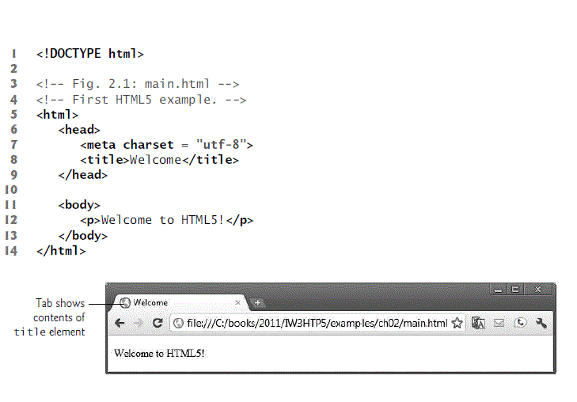
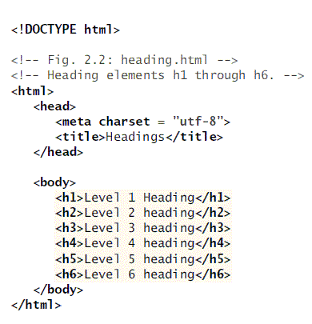

In the past, most computer applications ran on computers that were not connected to one another, whereas today’s Internet applications can be written to communicate among computers throughout the world. We rely on computers and the Internet to communicate, navigate, collaborate and more. Table 1.1 gives some examples of how computers and the Internet provide the infrastructure for these tasks.
| Name | Description |
|---|---|
| Cloud Computing | Allows you to use software, hardware and information stored in the “cloud”—i.e., accessed on remote computers via the Internet and available on demand—rather than having it stored on your personal computer. Cloud computing provides resources as services and is based on pay-per use model. These services, allowing you to increase or decrease resources to meet your needs at any given time, are generally more cost effective than purchasing expensive hardware to ensure that you have enough storage and processing power to meet your needs at their peak levels. |
| GPS | Global Positioning System (GPS) devices use a network of satellites to retrieve location-based information. Multiple satellites send time-stamped signals to the GPS device, which calculates the distance to each satellite based on the time the signal left the satellite and the time the signal arrived. This information is used to determine the exact location of the device. |
| Robots | Robots can be used for day-to-day tasks (e.g., iRobot’s Roomba vacuum), entertainment (e.g., robotic pets), military combat, deep sea and space exploration (e.g., NASA’s Mars rover) and more. |
| E-mail, Instant Messaging, Video Chat and FTP |
Internet-based servers support all of your online messaging. E-mail messages go through a mail server that also stores the messages. Instant messaging (IM) and Video Chat apps, such as AIM, Skype, Yahoo! Messenger and others allow you to communicate with others in real time by sending your messages and live video through servers. FTP (file transfer protocol) allows you to exchange files between multiple computers (e.g., a client computer such as your desktop and a file server) over the Internet using the TCP/IP protocols for transferring data. |
HTML5 documents are created by typing HTML5 markup text in a text editor (such as Notepad, TextEdit, vi, emacs) and saved with the .html or .htm filename extension. They are stored in computers called web servers and the Clients can request the documents through web browsers running on your local computer or smartphone
Following figure shows a simple HTML5 document named main.html
HTML5 provides six heading elements (h1 through h6) for specifying the relative importance of information. Heading element h1 is considered the most significant one and is typically rendered in a larger font than the other five. Each successive heading element is typically rendered in a progressively smaller font. Following figure describes the usage of the heading elements:
